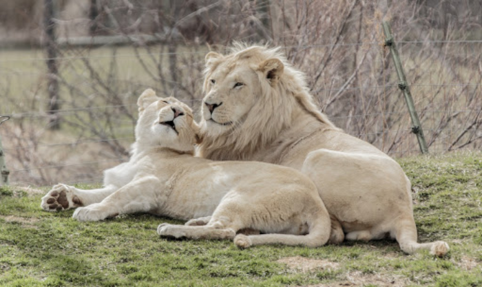

Лев - хижий звір, є одним з чотирьох представників роду пантер, що відноситься до підродини великих кішок.(лат. Panthera leo) - хижий ссавець сімейства котячих. Але його спосіб життя нетиповий для великих кішок. Леви живуть великими сімейними групами - прайдами. Вони не полюють поодинці, на відміну від гепардів і тигрів. Всі члени сімейства довго живуть разом і дорослих левенят не виганяють, якщо тільки умови на мисливській території не стають критичними.
Характерна особливість лева - густа грива у самців, чого немає у інших представників сімейства котячих. Зовні лев - це ледачий звір, який подовгу дрімає і байдикує. Тільки коли лев голодний і змушений переслідувати стада травоїдних або коли повинен захищати свою територію, він виходить із цього стану.
Зазвичай на полювання вирушає група самиць, самці ж рідко приєднуються до них. Мисливиці оточують жертву, причаївшись у високій траві. Коли тварина помічає небезпеку, її охоплює паніка, і вона намагається врятуватися бігом, але найчастіше потрапляє в лапи інших, непомічених нею левиць.